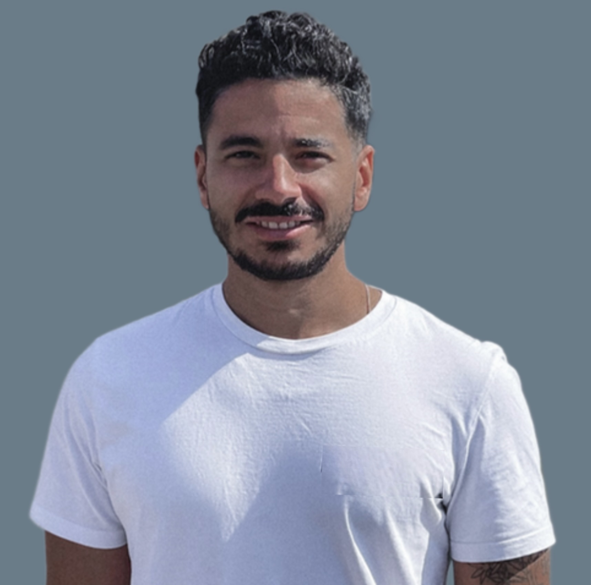

Available for new engagements
Hi, I'm Salah — I help teams ship product faster.
I'm an independent software engineering consultant. Over 10 years building full-stack products, from first line of code to teams and systems that scale. These days I help companies ship faster by embedding AI and agentic workflows directly into how their products and teams work.
Full-Stack Product Engineering
AI & Agentic Workflows
Technical Leadership
EU-registered company · available for B2B contracts
